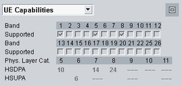

UE Capabilities
To display the most important UE capabilities, select "UE Capabilities" in the field below the event log area. Press the maximize button  to the right of the field to display all capability information.
to the right of the field to display all capability information.
To maximize the area also horizontally, press the maximize button to the right again.

UE capabilities pane
The displayed information comprises the following extract from the UE capability report:
- Supported WCDMA operating bands
- Physical layer categories of the UE for HS-DSCH (Rel.5, Rel.7 - Rel.11) and E-DCH (Rel.6, Rel.9, Rel.11)
This section is not relevant for reduced signaling.
The UE capabilities characterize the radio access capabilities of the UE. This information is received from the UE during registration. The radio access capabilities are described in 3GPP TS 25.306 and the references given therein.
The provided UE capability information is described in the subsections.
Contents
- General UE Capabilities
- HSDPA UE Capabilities
- HSUPA UE Capabilities
- RF UE Capabilities
- PDCP UE Capabilities
- RLC UE Capabilities
- Physical Downlink UE Capabilities
- Physical Uplink UE Capabilities
- Multi-Mode and Multi-RAT UE Capabilities
- Positioning UE Capabilities
- Measurement Related UE Capabilities
- Codec UE Capabilities
- IMS Voice